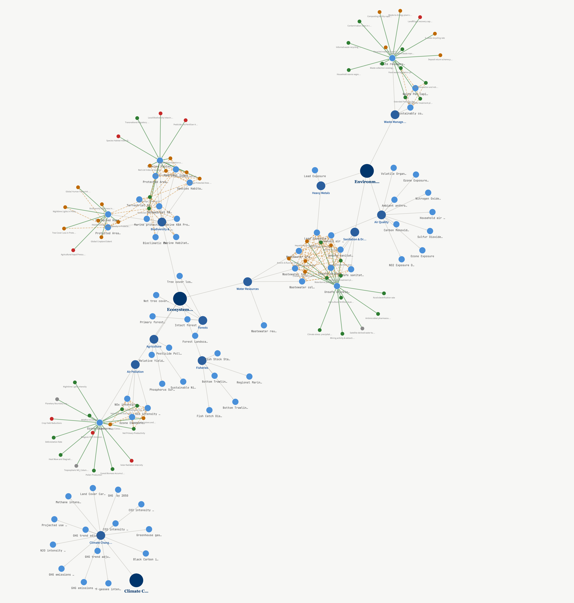
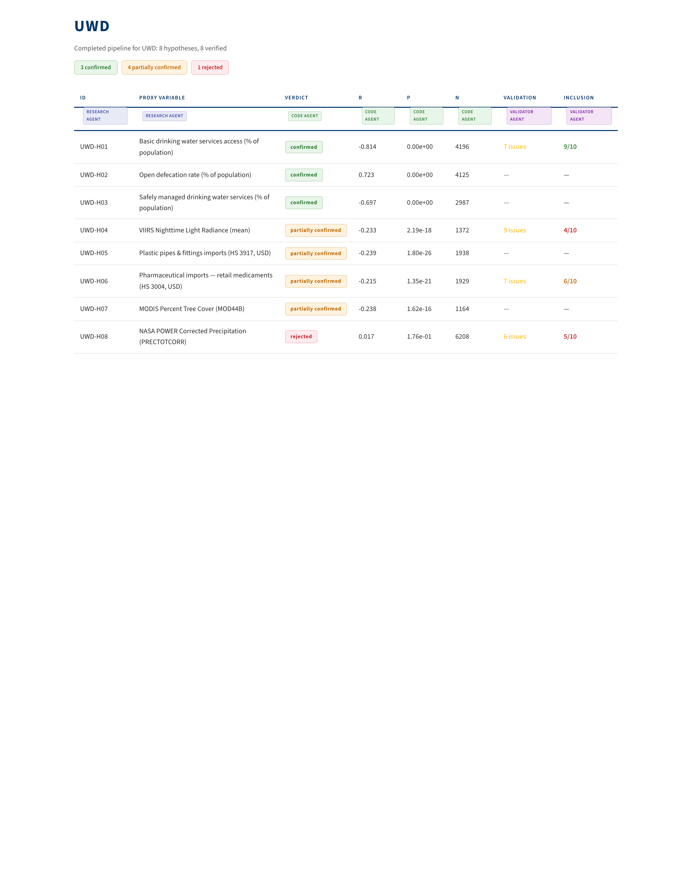

The Problem
EPI indicators are sparse & imputed
180 countries scored across 58 environmental indicators — but many rely on modeled, not measured, data.
- Waste & recycling — 56 countries imputed (R² = 0.42 vs GDP)
- Wastewater — single-year snapshots, sparse coverage
- Pesticide risk — only 2015 & 2018 globally
Parallel · COVID-19
- Need: Official case counts under-reported — testing gaps, asymptomatic spread.
- Mechanism: Infected people shed SARS-CoV-2 RNA in stool; sewage concentration tracks prevalence.
- Ramifications: Wastewater signal forecast surges ~7 days ahead, independent of testing.
Method
Multi-Agent Proxy Discovery Pipeline
Stage 1 drafts proxy hypotheses from the literature; Stage 2 verifies each with live data.
Research
- Gemini Deep Research
- Literature + causal map
Extraction
- Claude parser
- Pydantic schema
Explore
- Claude Code SDK
- Pearson, partial, AIC
Validate
- 10 inclusion criteria
- Gates coverage & access
Step 3 · Knowledge Graph Compilation
- Compile: verified edges merge into one cross-indicator graph.
- Transitivity: A ↔ B and B ↔ C surfaces A ↔ C as a candidate.
- Self-consistency: contradictory edge signs flag data issues.
- Hub discovery: shared proxies link indicators (e.g., water access → UWD, PHL, SPI).
Artifacts
Knowledge graph of verified proxies

Fig 1. Cross-indicator graph (NetworkX + clingo ASP). Nodes are indicators and proxies; edges encode validated correlations.
Sample output — UWD dashboard
auto-generated

Fig 2. Per-indicator dashboard from Stage 2: hypothesis verdicts, scatter plots, partial correlations.
Results
5 indicators · 48 hypotheses
| Indicator |
Strongest proxy |
r |
| UWD |
Basic water access |
−0.81 |
| UWD |
Open defecation rate |
+0.72 |
| SPI |
Wastewater per capita |
+0.60 |
| OEB |
Obesity prevalence |
−0.50 |